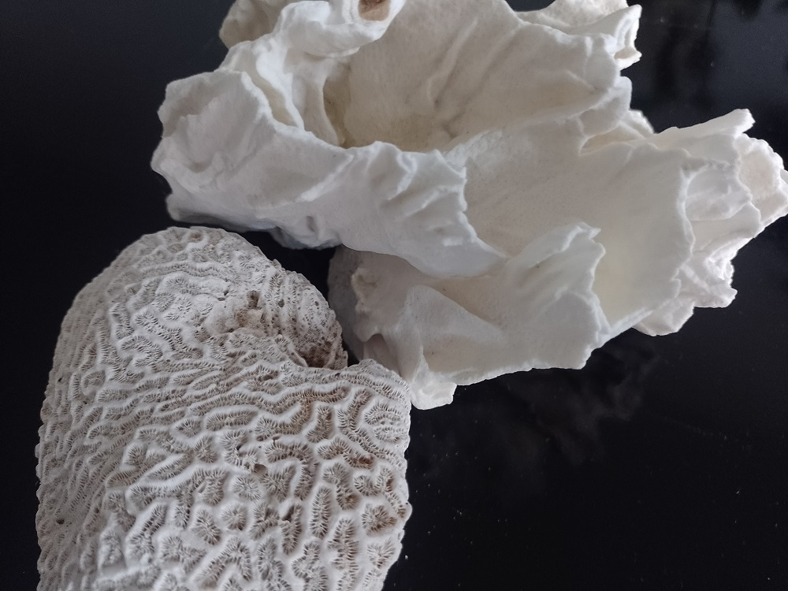

Chronicles of a biblio-naturalist | The most recent post
Coral Reefs That Remember | Silenced Knowledges and Memories in the Tropics (04)
| Published: April 24, 2025 |
When we speak of memory and knowledge in the tropics, our metaphors often reach for roots. Forests, soils, leaves — they lend themselves easily to the language of books, of archives, of systems we know how to read.
But what about the sea?
Blog The Log of a Librarian | The most recent post

Not Neutral, Not Safe: What Diverse Collections Actually Do in a Library | Decolonizing my Library (13 of 15)
| Published: May 20, 2025 |
Libraries are often imagined as neutral spaces — quiet, orderly, universal in their access to knowledge. But neutrality in libraries has always been a myth, one that conveniently masks the ideological nature of every decision made about what to collect, preserve, and circulate. A library's collection is not just a reflection of its budget or user base; it is a cultural map of whose voices are deemed worthy of record, and whose are not.
This curation of memory is not passive — it is a form of power.
Critical notes | The most recent post

Ecological Justice: Ending the Hypocrisy of "Green" Libraries in the Global North | Leaving Green Libraries Behind (09 of 10)
| Published: April 11, 2025 |
While many libraries adopt "green" practices —recycling bins, carbon offset credits, solar-powered conference rooms— their ecological footprint is often embedded in the very same global systems of inequality they claim to resist. If libraries want to be serious about climate action, they need to stop parroting Global North environmental narratives and start confronting the uncomfortable truths that real ecological justice demands.